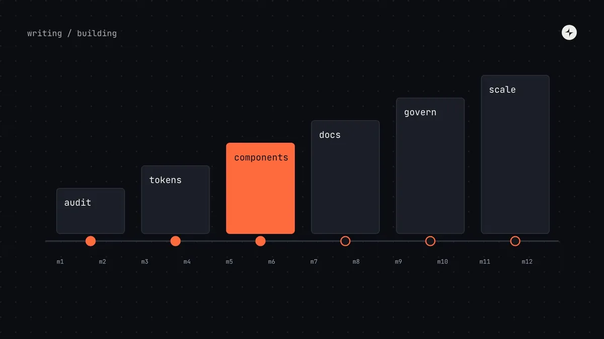
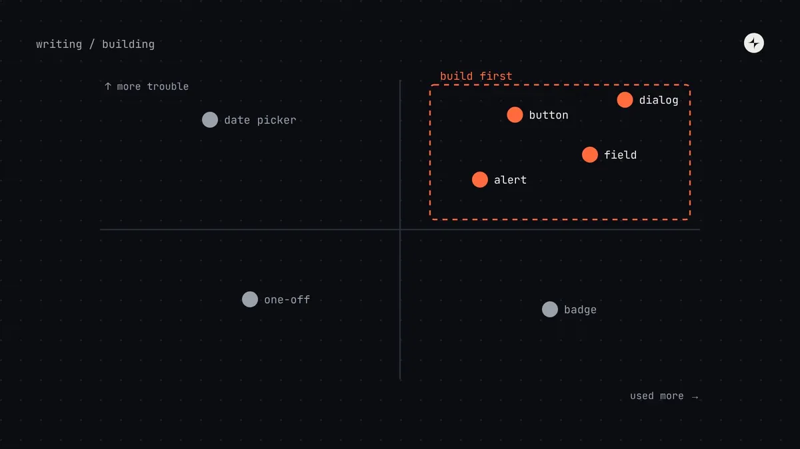
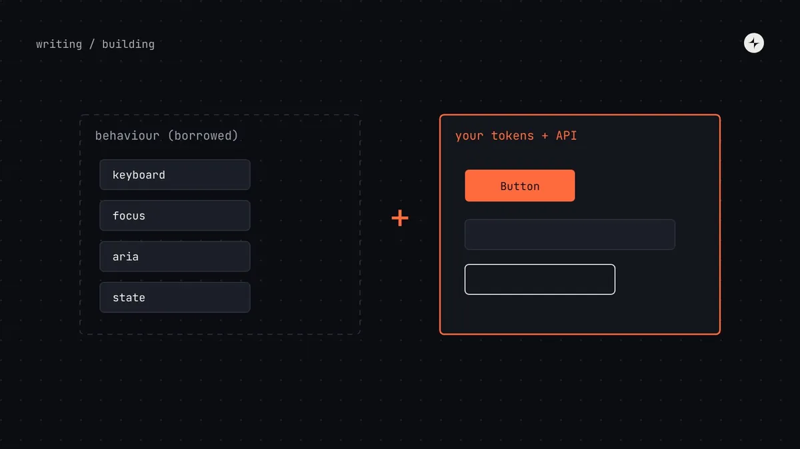
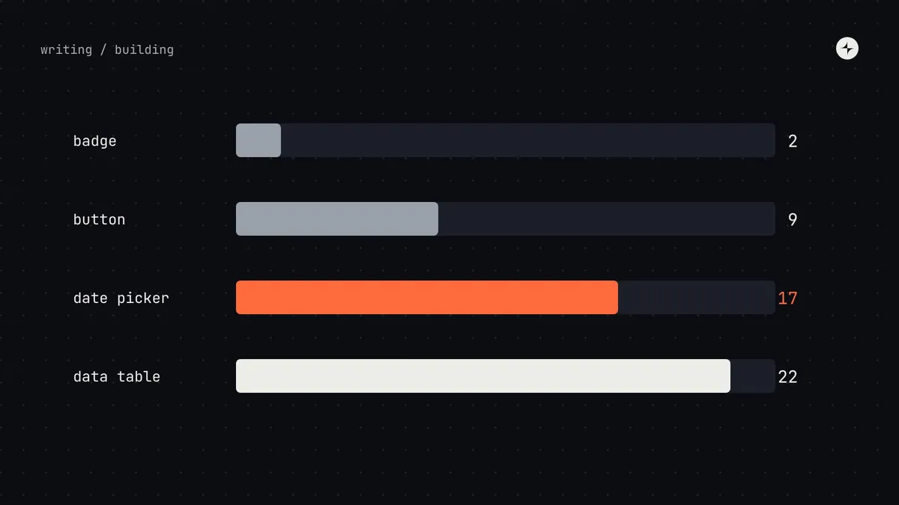
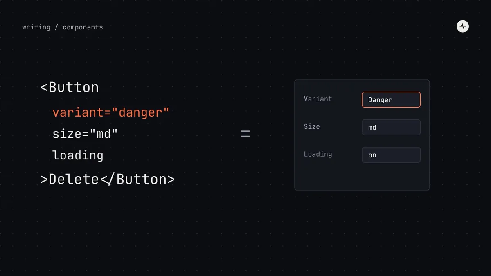
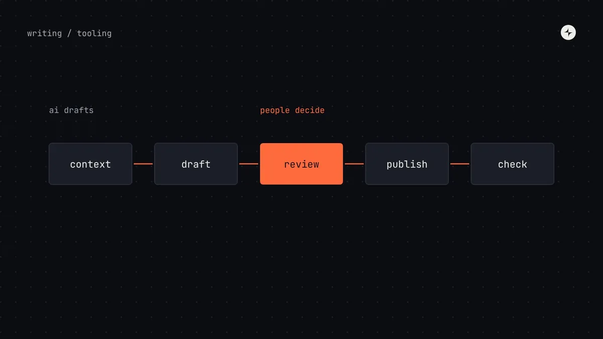

WritingTopic
Building a system
Auditing what you have, choosing what to build first, and documenting it so people can use it.

Building a systemHow to build a design systemAudit, foundations, tokens, first components, docs and governance, in order. A staged 12-month plan with gates, so you invest only as fast as it pays off.11 min read · Guide Building a systemHow to run a design system audit (with an interface inventory method)Screenshot, group, count and prioritise every button, field and colour in your product. A step-by-step UI audit that ends in a ranked plan, not a slide.8 min read
Building a systemHow to run a design system audit (with an interface inventory method)Screenshot, group, count and prioritise every button, field and colour in your product. A step-by-step UI audit that ends in a ranked plan, not a slide.8 min read Building a systemDesign system documentationWhat people actually read in design system docs, the sections every component page needs and how to structure the portal. A page template to copy.8 min read
Building a systemDesign system documentationWhat people actually read in design system docs, the sections every component page needs and how to structure the portal. A page template to copy.8 min read
Building a systemWhich components to build first: a prioritisation methodHow to choose your first design system components: count frequency and trouble, plot a 2×2, pick a pilot, and the eight components most teams start with.5 min read
Building a systemBuild, borrow or buyShould you build design system components, use a headless library or theme a styled one? Trade-offs, a decision table and what we usually recommend.5 min read
Building a systemComponent complexity: how to estimate design system workA scoring method for design system components: four levels of complexity, an eight-question rubric, and how complexity changes process and effort.6 min read
Building a systemComponent props best practices: designing APIs people can useHow to design component props: the eight kinds of props, rules for good APIs, controlled vs uncontrolled, and keeping props in step between Figma and code.6 min read
Building a systemAI in design systemsWhere AI genuinely helps design system teams today (docs, release notes, checks, migrations) and the cautions that matter when mistakes spread to every product.5 min read